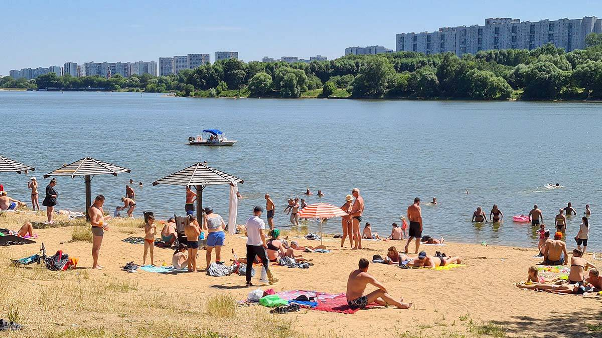

Природно-исторический парк (ПИП) «Косинский» занимает огромную территорию с большим количеством самых разнообразных природных достопримечательностей: это и знаменитое Косинское Трехозерье, и ручей Банная канава, и река Рудневки со своими окрестностями, и живописные леса и поля. Парк является одной из важнейших зеленых территорий Москвы, а три его озера — Белое, Черное и Святое — уникальны тем, что имеют редкое природное происхождение.
В пределах парка расположено древнее село Косино, ведущее свою историю с 1410 года, и комплекс православных церквей — Успенский, Никольский и Тихоновский храм, — каждый из которых рассказывает свою собственную уникальную историю. Флора и фауна природно-исторического парка «Косинский» также заслуживает отдельного внимания. Здесь произрастает множество необычных растений и водится большое количество редких птиц и животных, в том числе, за участках болот обитают дикие утки: кряквы, нырки, гоголи и многие другие. Парк «Косинский» открыт для посещения в течение всего года, круглосуточно. Вся его территория полностью свободна для посетителей, ограждений и заборов здесь нет. Вход в парк свободный.

Пляж
В Косинском парке оборудованы не только все необходимые зоны отдыха и условия для рыбалки, но и обустроены отличные песчаные пляжи для летнего отдыха посетителей. На одном из пляжей работает лодочная станция. На берегах местных озер произрастают внушительные тополи, ракиты и дубы, размер ствола которых в диаметре достигает 1 метра и более.Посетителей на пляжах Косинского парка всегда много, вода в озерах достаточно хорошо прогревается. На водной территории постоянно курсирует катер спасателей, поэтому за безопасность здесь можно не опасаться. На пляже натянута сетка для игры в пляжный волейбол, а неподалеку от нее — детская игровая площадка. Для детей здесь построен специальный мостик из дерева, паутина, песочница.

Ждем вас весной и летом и осенью и зимой